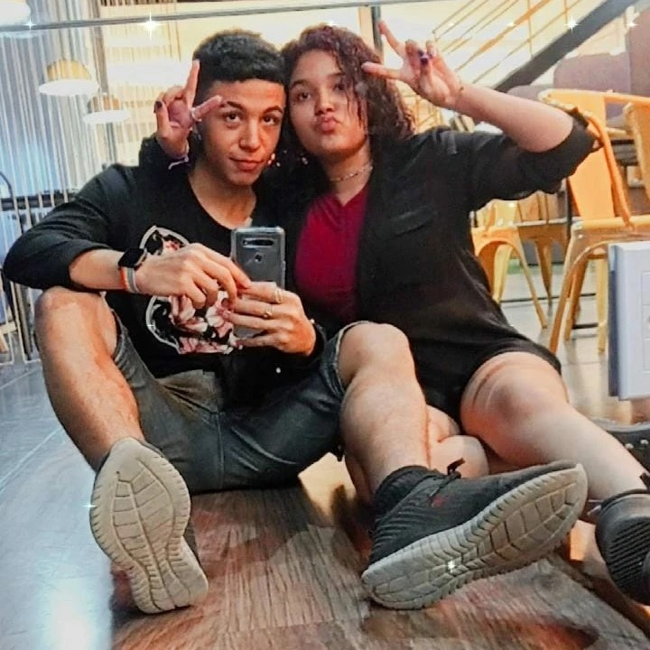

|
Quando o Davi me mandou aquela mensagem (a primeira vez que não foi pra falar sobre se a Bianca tinha ou não comido direito) sobre o site, eu não sabia muito bem sobre o que falar. É, eu fiquei a semana inteira pensando e no último dia tava surtando porque não conseguia escrever nada.
Pensei em falar sobre aquela vez que ela me acordou (era meio dia, mas me acordou) me ligando pra ir a um evento de k-pop porque ninguém queria ir com ela e ela tinha um ingresso sobrando. Eu levei umas meia hora deitado no telefone tentando convencer ela a me deixar dormir e levar outra pessoa. Já sabem que não deu certo. Ela me arrastou pra um lugar cheio de garota de doze anos dançando um monte de músicas que eu não conhecia, e ela ficava "Aiiii é aquela música daquele xing xong, aaaai eu amo aquele xing xong", e eu "Éééé, uhum, xing xong, uhul". Com certeza foi ótimo pra ela dançar todas as músicas de lá e depois rir de mim tentando fugir de um pedófilo de 27 anos de idade. Mas aí a moral da história seria: não vá pra esses rolês do nada com a Bianca, você corre o risco de ser pedofilado, e não é isso que eu queria falar.
Aí eu pensei em falar na outra vez que ela me acordou do nada me ligando, mas dessa vez era só pra ir em campo grande. Fiquei com o pé atrás, mas eu pensei "O que mais que pode acontecer em campo grande?". Fui. Chegando lá, ela veio "Eu quero tanto furar a orelha, vamo lá comigo, você é o meu amigo que sempre topa as minhas loucuras, vamo, por favorzinho". Cara, quando o garoto que tava colocando piercing na sobrancelha desmaiou, ela cravou as unhas no meu braço tão forte que eu queria ter desmaiado também. E como se não bastasse ela fez de novo na hora que o cara furou a orelha dela. Primeira vez que eu volto pra casa marcado e que não foi divertido. Tá, até que foi. Inclusive, prepara o teu braço pra quando for a minha vez de furar a cara.
Pensei naquela vez que a gente deu perdido em dois garotos da escola que tavam irritando a gente e depois ficou rindo deles, e de quando eu ia pra escola dela e ela descia correndo e passava o recreio todo comigo, e de como ela já falou mil vezes que deixou de dormir e de comer preocupada comigo quando eu sumi. Não sumam, ela vai lembrar disso pra sempre, e vai ser insuportável. Mas isso é porque ela se importa muito. E se você for amigo dela, cara, você vai ter dado a maior sorte do mundo, porque ela vai tá ali toda hora, e vai te chamar pros rolês mais loucos, que você provavelmente vai ter que fugir de alguma situação constrangedora ou vai voltar machucado, mas vai ter se divertido muito.
Ela vai te mostrar cada filme e série de japa que você vai tentar falar "naaaao, por favor, eu prefiro a morte", mas vai ter que assistir mesmo assim, e você vai ter que dizer que gostou e esconder que na verdade tava falando que gostou da pipoca, e ela vai te fazer de cobaia pra experimentar receitas que ela tirou não sei de onde de cachorro quente de batata e café gelado. Desconfio até hoje que aquele tempero verde na cozinha dela é alguma coisa ilegal.
Mas o mais importante de tudo, ela vai tá do seu lado, e nunca vai esquecer de você, e mesmo que ela tenha mil coisas pra fazer e more do outro lado do mundo e passe vinte e três horas do dia dela estudando, ela vai sempre fazer de tudo pra te ver, e quando vocês saírem, ela não vai pegar no celular, ou deixar o assunto morrer, ou dançar k-pop (tá, isso ela vai fazer às vezes, e inclusive vai até te puxar pra dançar junto, e você vai ficar rebolando porque é a única coisa que sabe fazer), mas ela vai tá ali presente, prestando atenção em você, te ouvindo, te entendendo, e te contando cada coisa louca que tu vai ficar "menina, desde quando tu tá assim". E tu vai apreciar isso muito, e sentir muito a falta dela nos dias que ela tiver vinte e três horas estudando, e vai saber que você é amigo da melhor de todas.
Mas se você estiver no whatsapp com ela e ver ela gravando um áudio, manda ela parar na hora, diz que tá sem fone, o alto-falante quebrou, inventa uma surdez repentina, porque senão pode ter certeza que vão vir vinte minutos de coisa pra ouvi. E a maior parte delas vai ser "Aaaaaaaaai", ou ela rindo, mas sem momentos de silêncio, porque ela tem essa incrível capacidade de falar muito. Se bem que as histórias dela são ótimas, então até que é bom. Pelo menos as que eu ouvi. Que não foram nem metade dos áudios que ela já me mandou. Ainda vou ouvir todos. Um dia. Juro.
Ah, Bebel, desejo que você me tenha como amigo por longos anos, pois eu sou bom de mais para você perder. Quer dizer, ter você como amiga, porque eu som bom de mais pra você perder. Ah, tu entendeu.
Cara, eu quero que seu dia seja incrível, porque você sempre faz os meus serem. E eu te acho uma mulher foda de mais. Eu lembro até hoje de quando tu era uma mini tu, timidazinha, com cabelo grande, casaco quadriculado azul escuro e roxo (ou era azul escuro e vermelho? Não me julga, faz quatro anos!) e a gente falava de Teen Wolf e Soy Luna na escola. Passou rápido de mais. Cuidado que daqui a pouco já é 18 e tu já pode ser presa.
E se tu não emprestar teu casaco pra ela, ela vai te lembrar em todo rolê que literalmente todo mundo do Ari usou e ela não, e se tu oferecer ela vai falar que não quer, até tu obrigar ela a usar e mandar ela pra Jacarepaguá com ele. Não recomendo.
Ela gosta de macarrão com molho branco e frango, e de criticar o KFC porque eles aumentaram o combo que a gente comprava em dois reais e ainda tiraram um frango, e ela é a minha melhor amiga, e eu não sei mais viver sem ela.
Parabéns. Você merece muito. E eu tô com saudade. Volta logo.
|

|